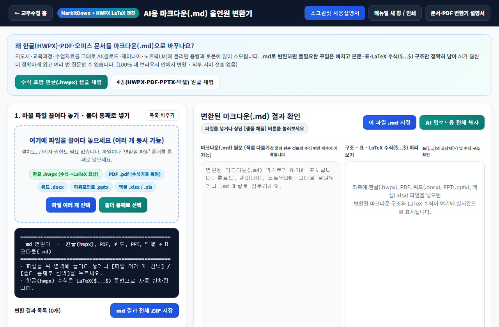

STEP 1
파일 끌어다 놓기 또는 폴더 통째로 넣기

- 방법 1 (끌어다 놓기): 바꿀 파일(
.hwpx,.pdf,.docx,.pptx,.xlsx)을 마우스로 끌어 점선 영역에 놓습니다. 여러 개를 한꺼번에 놓아도 됩니다. - 방법 2 (폴더 통째로 선택): [폴더 통째로 선택] 버튼을 눌러 '변환할 파일' 폴더를 지정하면 폴더 안의 모든 문서를 한 번에 마크다운으로 변환합니다.